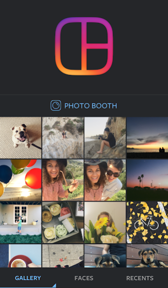

Layout 还能这么用——把拼图嵌进每周分享工作流
以前做周回顾或旅行分享要在三四个 App 之间来回切，现在用一个 3.78MB 的拼图工具把照片整理环节压缩到五分钟，成图直接进相册随便发哪个平台。
我每周要做一件事：把这一周里拍得还算能看的照片整理一下，拼成几张图发朋友圈、微博，有时候还要插一篇飞书周报复盘。这件事听起来简单，但以前我在这件事上花的时间，说出来你可能不信。
旧流程的断点
以前的操作是这样的：
先打开相册翻照片——上周去了趟咖啡馆拍了二十多张，和朋友吃饭拍了一堆，加班间隙手机随手拍了两页白板。从里面挑出想留的，这个环节大概五分钟。
然后开始拼。系统自带的拼图要么版式固定死，四宫格就是 1:1:1:1，我想把那杯拉花拉得特别好看的咖啡放大占一半空间，系统拼图不给这个选项。换个修图软件吧，又是登录又是会员弹窗，光是选版式就花了十分钟，还要处理各种引导广告。
拼完存出来，接下来才是真正的麻烦：朋友圈要竖图，微博可以方图，飞书文档插图又要横向长图——同一个拼图导出三个尺寸，每个都要去对应的 App 里调整裁剪，最后还要逐个上传。一条周回顾发下来，前后折腾半小时。
而且我发现每次都卡在同一个地方：拼图这一步太笨重了。版式固定、成图尺寸单一、还要经过各种中间环节。我需要的其实很简单——快速把几张照片排好，主照拉大一点，导出一张我能随便拿去发的图片，仅此而已。
把 Layout 插进流程
偶然在Layout官网翻到 Layout 之后，我把它嵌进了这条周回顾工作流里。现在的流程变成：
第一步：相册选图 → Layout
Layout 的界面极其干净，安装包从官方下载拿就行。打开就是相册照片网格，点选之后自动匹配版式。它最多支持九张拼图，这个上限对我来说够用了——九宫格封面刚好是周回顾的视觉重心，四宫格放美食，六宫格放旅行细节，想怎么搭就怎么搭。

选完照片进入编辑界面，这才是 Layout 真正的核心。每两格之间有一条蓝色分隔条——手指一拖，比例就变了。向右拖右边那格变大，向左拖左边变大，每个格子不会缩到完全消失但足够灵活。以前系统拼图给我四等分，现在我可以把主菜那格占掉一半空间，凉菜、主食、甜点各占剩下的，主照有了，细节也没丢。
第二步：Layout 成图 → 系统相册
编辑完点右下角确认，Layout 在一秒内把所有效果合成渲染成一张 1080×1080 的 JPG，直接存进系统相册的 Layout 文件夹。原图完全不动，成图作为新文件单独保存——这个细节让我很放心，不会不小心覆盖什么。
成图尺寸固定是 Instagram 友好的 1:1，这反而成了优势：朋友圈可以直接发或者裁一下，微博原样传，飞书文档插图也能接受方图。一张图搞定三个平台，少了两次手动裁剪。
第三步：相册 → 各平台
成图进了系统相册之后，后续的分发就是各平台原生的事情了。朋友圈里选图直接发，微博里配上文字上传，飞书文档插图拖进去就行。Layout 不绑定任何社交平台，不强制你登录，不自动发布——它只负责把拼图这件事做到位，剩下的交给你自己的工作方式。
实操里最容易断链的两个环节
用了几周之后，我发现这条流程里有两个地方需要注意，否则会卡壳。
环节一：从海量照片里挑合影
周回顾里经常需要把一堆合影拼成一张，但从两三百张照片里手动挑出带人脸的那些很费眼。Layout 有个 Faces 功能，它能自动识别带人脸的照片——点开之后，相册里只有有人脸的照片会被列出来，剩下的自动隐藏。以前我要一张张翻，后来翻了Layout文档才发现这个功能，用上之后速度快了至少三倍。

环节二：连拍四张做表情包加班偶尔会遇到需要快速连拍然后拼成四格表情包的场景——Layout 有个 Photo Booth 功能，按住快门键连拍四张，自动排成 2×2 网格。这个功能只有独立版才有，快拍内置版没有。以前我要打开相机连拍，再去拼图应用里手动选这四张，现在直接在 Layout 里按住快门就行，一步到位。
这套流程什么时候划算
对于我这种每周固定要做照片整理和多平台分发的人来说，Layout 把原来的半小时压缩到了五分钟。具体省在哪里：少了两次手动裁剪尺寸的操作、不用再为不同平台调整版式、不用处理修图软件的登录和广告引导。
但这套流程不是对所有人都划算。如果你只是偶尔发一张 Instagram 快拍，快拍内置版 Layout 就能搞定，不用额外装 3.78MB 的独立版。如果你需要复杂的滤镜、文字叠加、贴纸这些，Layout 也帮不上忙——它不提供这些功能，你还是得回到修图软件。
还有一个现实问题：Layout 已经从 Google Play 和 App Store 下架了，我用了半年，安卓 11 以上的设备基本都能正常运行，iOS 的情况没试过，需要的话自己找包测试一下兼容性。
总的来说，Layout 在我的工作流里是个"安静"的角色——它不抢风头，不强行绑定，就把拼图这一件事做好，然后把成图交回给我的系统相册，让我按照自己的方式继续分发。对于想要轻量工具、不希望被平台绑定的人来说，这种简单反而是最大的优势。
关于 Layout 的安装包和文档资料，我分别同步到了GitHub、Gitee 和 GitCode 三个仓库，国内外访问都能拿到，各取所需就行。